Breakthroughs in Driven and Open Systems#
Lattices out of equilibrium: wavepackets in a tilted lattice and the
tunnelling between its bands, light in waveguide arrays, periodically
driven (Floquet) bands, from dynamic localization to their anomalous
topology, and non-Hermitian bands with gain, loss, exceptional points,
the skin effect and the generalized Brillouin zone. It traces the ideas
behind tbkit.propagation, tbkit.floquet and
tbkit.exceptional.
1928/1960 – Bloch Oscillations and the Wannier-Stark Ladder#
Bloch pointed out an immediate, counterintuitive consequence of his own theorem: a uniform force on an electron in a periodic lattice does not uniformly accelerate it, the way it would in free space. Instead, Bloch’s argument and its later formalization by G. Wannier show the electron oscillates periodically in real space, with period \(T_B = 2\pi/F\) (\(\hbar=1\)), while the spectrum of the tilted lattice collapses into an exactly evenly spaced ladder,
the Wannier-Stark ladder, with every eigenstate exponentially localized around its own lattice site by the tilt alone – a deterministic cousin of Anderson localization (1958, below). In real crystals scattering happens on a timescale far shorter than \(T_B\), which is why the effect went unobserved for over 60 years; it took artificial semiconductor superlattices, with a far larger effective lattice constant and hence much shorter \(T_B\), to see it directly.
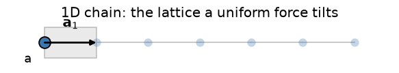
Implementation: a uniform force is exactly a linear onsite potential
gradient, so no dedicated function is needed:
tbkit.system.System.set_onsite_def() applies it directly, and
tbkit.propagation.Propagation (see 1954 below for the general
Tight-Binding framework it operates on) evolves a wavepacket under the
resulting tilted Hamiltonian.
References: F. Bloch, Z. Phys. 52, 555-600 (1929); G. H. Wannier, “Wave functions and effective Hamiltonian for Bloch electrons in an electric field,” Phys. Rev. 117, 432-439 (1960); experimentally confirmed by C. Waschke et al., “Coherent submillimeter-wave emission from Bloch oscillations in a semiconductor superlattice,” Phys. Rev. Lett. 70, 3319-3322 (1993).
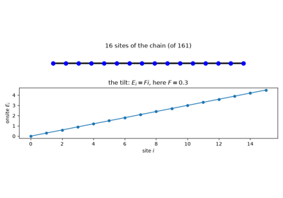
Bloch Oscillations and the Wannier-Stark Ladder
1932/1934 – Landau-Zener Tunnelling and Zener Breakdown#
In 1932 Landau, Zener, Stückelberg and Majorana independently solved the same problem: two levels swept through an avoided crossing, \(H(t) = \frac{\alpha t}{2}\sigma_z + \Delta\sigma_x\). A slow sweep follows the adiabatic level; a fast one jumps the gap \(2\Delta\) with the probability
Two years later Zener turned it into a theory of the electrical breakdown of insulators. In a uniform field \(F\) the Bloch momentum sweeps through the Brillouin zone, \(\dot k = F\), and where two bands nearly cross the electron tunnels into the next band instead of being Bragg-reflected – the partner of the Bloch oscillation (1928/1960, above), which it ends. In a binary chain (hopping \(t\), onsite energies \(\pm\delta\)), the crossing at the zone edge has \(\alpha = 4tF\) and \(\Delta = \delta\), so a fraction \(e^{-\pi\delta^2/(2tF)}\) of the wavepacket changes band at each passage. Trompeter et al. watched it happen with light in a waveguide array (2006).
Implementation: tbkit.floquet.evolution_operator() gives the
time-ordered evolution of any \(H(t)\) over a time interval, here a
sweep rather than a period; tbkit.system.System.set_onsite_def()
applies the tilt and tbkit.propagation.Propagation evolves the
wavepacket.
References: L. D. Landau, Phys. Z. Sowjetunion 2, 46 (1932); C. Zener, “Non-adiabatic crossing of energy levels,” Proc. R. Soc. Lond. A 137, 696-702 (1932); E. C. G. Stückelberg, Helv. Phys. Acta 5, 369 (1932); E. Majorana, Nuovo Cimento 9, 43-50 (1932); C. Zener, “A theory of the electrical breakdown of solid dielectrics,” Proc. R. Soc. Lond. A 145, 523-529 (1934); H. Trompeter, T. Pertsch, F. Lederer, D. Michaelis, U. Streppel, A. Bräuer, and U. Peschel, “Visual observation of Zener tunneling,” Phys. Rev. Lett. 96, 023901 (2006).
Example: examples/dynamics/plot_landau_zener_tunnelling.py confirms
the Landau-Zener probability for a two-level sweep at four rates, then
the weight a wavepacket leaves in the upper band of a tilted binary chain
after one Bloch period, for forces from 0.05 to 0.8, both to within 0.01
of the formula.
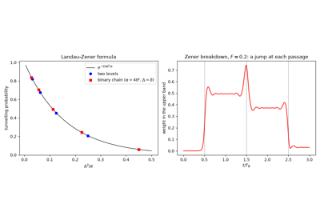
Landau-Zener Tunnelling and Zener Breakdown
1986/1991 – Dynamic Localization and Coherent Destruction of Tunnelling#
A static field localizes a lattice electron into a Wannier-Stark ladder (1928/1960, above). Dunlap and Kenkre showed that an AC field \(F\cos\omega t\) can do the same in another way: averaged over a period it renormalizes the hopping,
so at the zeros of the Bessel function \(J_0\) the band collapses and a wavepacket stops spreading – dynamic localization. Grossmann, Dittrich, Jung and Hänggi found the two-site version: in a double well driven by \(\frac{A}{2}\cos(\omega t)\sigma_z\), the tunnel splitting becomes \(2t|J_0(A/\omega)|\) at high frequency, and the particle stays in the well it started in at the zeros of \(J_0\) – coherent destruction of tunnelling. Both were seen with light in curved waveguides (Longhi et al., 2006; Della Valle et al., 2007) and with cold atoms in shaken optical lattices (Lignier et al., 2007), where the same renormalization later became a tool to tune, or flip the sign of, the hopping.
Implementation: tbkit.floquet.DrivenKSpace takes any
\(H(\mathbf{k}, t)\), here the chain in an AC vector potential, and
returns its Floquet band;
effective_hamiltonian(),
quasienergies() and
evolution_operator() handle a driven matrix such as
the double well.
References: D. H. Dunlap and V. M. Kenkre, “Dynamic localization of a charged particle moving under the influence of an electric field,” Phys. Rev. B 34, 3625-3633 (1986); F. Grossmann, T. Dittrich, P. Jung, and P. Hänggi, “Coherent destruction of tunneling,” Phys. Rev. Lett. 67, 516-519 (1991); S. Longhi, M. Marangoni, M. Lobino, R. Ramponi, P. Laporta, E. Cianci, and V. Foglietti, “Observation of dynamic localization in periodically curved waveguide arrays,” Phys. Rev. Lett. 96, 243901 (2006); G. Della Valle, M. Ornigotti, E. Cianci, V. Foglietti, P. Laporta, and S. Longhi, “Visualization of coherent destruction of tunneling in an optical double well system,” Phys. Rev. Lett. 98, 263601 (2007); H. Lignier, C. Sias, D. Ciampini, Y. Singh, A. Zenesini, O. Morsch, and E. Arimondo, “Dynamical control of matter-wave tunneling in periodic potentials,” Phys. Rev. Lett. 99, 220403 (2007).
Example: examples/floquet/plot_dynamic_localization.py confirms
that the Floquet band of the driven chain is \(2tJ_0(F/\omega)\cos k\)
to \(10^{-10}\), flat at \(F/\omega = 2.405\); that the
quasienergy splitting of the double well at \(\omega = 20t\) follows
\(2t|J_0(A/\omega)|\) to within \(0.01t\); and that at the zero
of \(J_0\) the particle keeps more than 99% of its weight in the
starting well for 100 periods, while without the drive it tunnels
across completely.
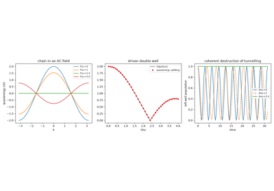
Dynamic Localization and Coherent Destruction of Tunnelling
1996/2018 – The Non-Hermitian Skin Effect#
N. Hatano and D. Nelson (1996) studied a chain whose hoppings to the right and to the left differ – a non-reciprocal, non-Hermitian lattice. It became the paradigm of the skin effect (Yao and Wang; Kunst, Edvardsson, Budich and Bergholtz, 2018): on a ring the spectrum winds around the energies inside it (a nonzero spectral winding number), while on an open chain it collapses onto a different, real set and every eigenstate piles up at one end. The open-chain bands are then no longer Bloch waves (see the generalized Brillouin zone, 2018/2019, below).
Implementation: tbkit.kspace.KSpace.set_hopping() with
hermitian=False (non-reciprocal hoppings),
spectral_winding() and
finite_ham() (open or periodic chains).
References: N. Hatano and D. R. Nelson, “Localization Transitions in Non-Hermitian Quantum Mechanics,” Phys. Rev. Lett. 77, 570-573 (1996); S. Yao and Z. Wang, “Edge States and Topological Invariants of Non-Hermitian Systems,” Phys. Rev. Lett. 121, 086803 (2018); F. K. Kunst, E. Edvardsson, J. C. Budich, and E. J. Bergholtz, Phys. Rev. Lett. 121, 026808 (2018).
Example: examples/non_hermitian/plot_skin_effect.py confirms, for
the Hatano-Nelson chain, the winding number 1, the real open-chain
spectrum inside \(\pm2\sqrt{t_Rt_L}\), and every eigenstate on the
left end.
1998/2015 – PT Symmetry, Exceptional Points, and Gain-Loss Lattices#
C. Bender and S. Boettcher overturned a piece of textbook folklore: Hermiticity is sufficient for a real spectrum, but it is not necessary. A Hamiltonian merely symmetric under the combined parity-time operation \(\mathcal{PT}\) can have an entirely real spectrum too. On a lattice this means balanced gain and loss – imaginary onsite energies \(\pm i\gamma\) placed symmetrically on the two sublattices – leaves every eigenvalue real up to a finite threshold in \(\gamma\).
At that threshold the eigenvalues do not cross; they collide and move off into the complex plane as conjugate pairs. The collision point is an exceptional point, and it is unlike any Hermitian degeneracy: the two eigenvectors coalesce as well, so the Hamiltonian loses a dimension of its eigenbasis and stops being diagonalizable altogether. How close a mode has come to that degeneracy is measured by the Petermann factor \(K_n\), introduced decades earlier in laser physics to explain anomalously broad linewidths,
which equals 1 for an orthogonal (Hermitian) eigenbasis and diverges at an exceptional point. None of this is a formal game: gain and loss are the most accessible knobs an optics experimentalist has, and \(\mathcal{PT}\) symmetry breaking was seen directly in coupled optical waveguides in 2010.
Combined with topology it produces an effect with no Hermitian counterpart at all. Chiral symmetry forces each of the SSH model’s zero modes (1979, above) to live entirely on one sublattice, so sublattice gain and loss is felt by them but not by the bulk states, which are spread evenly over both. The topological modes are therefore the first to leave the real axis, picking up energies \(\pm i\gamma\) at any gain at all, while the entire bulk stays real until \(\gamma\) reaches the bulk gap – a way to amplify a topological mode selectively, demonstrated in a chain of dielectric microwave resonators.
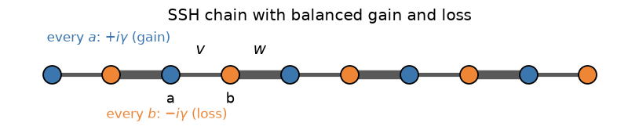
Implementation: tbkit.system.System.set_onsite() accepts complex
onsite energies, and get_eig() detects a
non-Hermitian Hamiltonian and switches to the general (non-symmetric)
eigensolver, with left=True returning the left eigenvectors too;
get_petermann() builds \(K_n\) from both
sets, and tbkit.plot.Plot.spectrum_complex() plots the real and
imaginary parts of the spectrum together.
References: C. M. Bender and S. Boettcher, “Real Spectra in Non-Hermitian Hamiltonians Having PT Symmetry,” Phys. Rev. Lett. 80, 5243-5246 (1998); K. Petermann, “Calculated spontaneous emission factor for double-heterostructure injection lasers with gain-induced waveguiding,” IEEE J. Quantum Electron. 15, 566-570 (1979); C. E. Ruter, K. G. Makris, R. El-Ganainy, D. N. Christodoulides, M. Segev, and D. Kip, “Observation of parity-time symmetry in optics,” Nature Physics 6, 192-195 (2010); H. Schomerus, “Topologically protected midgap states in complex photonic lattices,” Opt. Lett. 38, 1912-1914 (2013); C. Poli, M. Bellec, U. Kuhl, F. Mortessagne, and H. Schomerus, “Selective enhancement of topologically induced interface states in a dielectric resonator chain,” Nat. Commun. 6, 6710 (2015).
Example: examples/non_hermitian/plot_pt_symmetry.py confirms, for a
gain-loss dimer, that the spectrum is real and equal to
\(\pm\sqrt{t^2-\gamma^2}\) below the exceptional point at
\(\gamma=t\), purely imaginary above it, and that the Petermann
factor matches \(1/(1-\gamma^2/t^2)\) to machine precision before
diverging at the exceptional point itself. It then applies the same
gain-loss pattern to a 40-site topological SSH chain and confirms that
exactly two states – the edge modes – acquire imaginary parts, at
exactly \(\pm i\gamma\), that the amplified one lies entirely on the
gain sublattice and the damped one entirely on the loss sublattice, and
that the bulk stays real until \(\gamma\) exceeds \(|v-w|\).
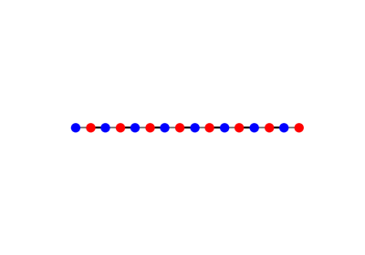
PT Symmetry, Exceptional Points, and a Selectively Amplified Edge Mode
1999/2003 – Discrete Optics in Waveguide Arrays#
Light in parallel optical waveguides couples from one guide to the next through their evanescent tails, and in coupled-mode theory the field amplitudes obey a Tight-Binding Schrödinger equation in which the propagation distance \(z\) plays the role of time, \(i\,d\psi_n/dz = c(\psi_{n+1} + \psi_{n-1})\). Two guides form a directional coupler, whose power swaps as \(\cos^2(cz)\); Jones (1965) predicted that light launched into one guide of an array spreads as \(|J_n(2cz)|^2\), a discrete diffraction with two outer lobes and no Gaussian spot. Semiconductor and glass arrays made in the 1990s turned this into a laboratory for lattice physics, where the wave function can be watched along the sample: discrete solitons (predicted by Christodoulides and Joseph, 1988, observed by Eisenberg et al., 1998), diffraction that vanishes or changes sign with the phase tilt of the input beam (Eisenberg et al., 2000), and in 1999 optical Bloch oscillations (Pertsch et al.; Morandotti et al.), the first direct images of the 1928 prediction (above). Christodoulides, Lederer and Silberberg (2003) reviewed the field; Zener tunnelling, dynamic localization (above) and the PT-symmetric couplers (1998/2015, above) were later seen in the same platform.
Implementation: tbkit.propagation.Propagation integrates the
coupled-mode equations along \(z\)
(get_propagation(), Crank-Nicolson),
and plt_prop_dimer() draws the
directional coupler.
References: A. L. Jones, “Coupling of optical fibers and scattering in fibers,” J. Opt. Soc. Am. 55, 261-271 (1965); D. N. Christodoulides and R. I. Joseph, “Discrete self-focusing in nonlinear arrays of coupled waveguides,” Opt. Lett. 13, 794-796 (1988); H. S. Eisenberg, Y. Silberberg, R. Morandotti, A. R. Boyd, and J. S. Aitchison, “Discrete spatial optical solitons in waveguide arrays,” Phys. Rev. Lett. 81, 3383-3386 (1998); T. Pertsch, P. Dannberg, W. Elflein, A. Bräuer, and F. Lederer, “Optical Bloch oscillations in temperature tuned waveguide arrays,” Phys. Rev. Lett. 83, 4752-4755 (1999); R. Morandotti, U. Peschel, J. S. Aitchison, H. S. Eisenberg, and Y. Silberberg, “Experimental observation of linear and nonlinear optical Bloch oscillations,” Phys. Rev. Lett. 83, 4756-4759 (1999); H. S. Eisenberg, Y. Silberberg, R. Morandotti, and J. S. Aitchison, “Diffraction management,” Phys. Rev. Lett. 85, 1863-1866 (2000); D. N. Christodoulides, F. Lederer, and Y. Silberberg, “Discretizing light behaviour in linear and nonlinear waveguide lattices,” Nature 424, 817-823 (2003).
Example: examples/dynamics/plot_discrete_optics_in_waveguide_arrays.py
confirms the \(\cos^2(cz)\) power exchange of the coupler and the
\(|J_n(2cz)|^2\) intensity of discrete diffraction to
\(10^{-4}\), with the ballistic width \(\langle n^2\rangle =
2c^2z^2\), and that a broad beam tilted by \(\pi/2\) per guide barely
broadens while the untilted one triples its width.
2009 – The Photovoltaic Hall Effect#
T. Oka and H. Aoki asked what happens to graphene illuminated by circularly polarized light, and found a Hall current without any magnetic field. An electron near a Dirac point is driven once around a circle in momentum space per period, and the geometric (Aharonov-Anandan) phase it picks up acts as a Berry curvature of the Floquet states; the Hall conductivity is the Floquet extension of the TKNN formula (1982), \(\sigma_{xy} = \frac{e^2}{h}\frac{1}{2\pi}\int d^2k\sum_\alpha f_\alpha\Omega_\alpha\), with \(f_\alpha\) the occupations of the Floquet bands. Light opens a gap at both Dirac points, as a staggered (Semenoff) potential would, but its Berry curvature has the same sign in both valleys, which add up to \(\sigma_{xy} = \pm e^2/h\) when the lower Floquet band is full, and to \((e^2/h)\,m/|E_F|\) at a Fermi level in the upper band near its edge. McIver et al. measured this light-induced anomalous Hall effect in graphene in 2020.
Implementation: tbkit.floquet.FloquetKSpace (light enters
through the Peierls phases of tbkit.kspace.KSpace.get_ham_peierls())
gives the Floquet bands, whose curvature
berry_curvature() maps over the Brillouin
zone.
References: T. Oka and H. Aoki, “Photovoltaic Hall effect in graphene,” Phys. Rev. B 79, 081406 (2009); J. W. McIver, B. Schulte, F.-U. Stein, T. Matsuyama, G. Jotzu, G. Meier, and A. Cavalleri, “Light-induced anomalous Hall effect in graphene,” Nature Physics 16, 38-41 (2020).
Example: examples/floquet/plot_photovoltaic_hall_effect.py
confirms that the lower Floquet band of illuminated graphene carries
Berry flux of the same sign at \(K\) and \(K'\), adding up to
\(\pm1\), while a staggered potential with the same gap gives
opposite fluxes adding up to 0; that \(\sigma_{xy} = \pm e^2/h\) in
the gap; and that at \(E_F = 1.25\), 1.5 and 2 times the mass
\(|\sigma_{xy}|\) follows the massive Dirac value
\((e^2/h)\,m/|E_F|\) to within 5%.
2011 – Floquet Topological Insulators#
Kitagawa, Oka, Brataas, Fu and Demler, and Lindner, Refael and Galitski, showed that periodic driving can engineer topological bands. Stroboscopically a drive of period \(T\) acts as a static Floquet Hamiltonian, \(e^{-iH_FT} = \mathcal{T}e^{-i\int_0^TH(t)dt}\); for light on graphene, the setting of the photovoltaic Hall effect (2009, above), \(H_F\) gains at high frequency Haldane’s complex second-neighbour hopping, and its lower band becomes a Chern band.
Implementation: tbkit.floquet – quasienergies and the Floquet
Hamiltonian from the time-ordered evolution, the Sambe (extended) space
of the harmonics, and FloquetKSpace, a driven
Bloch model (light enters through
tbkit.kspace.KSpace.get_ham_peierls()).
References: T. Kitagawa, T. Oka, A. Brataas, L. Fu, and E. Demler, Phys. Rev. B 84, 235108 (2011); N. H. Lindner, G. Refael, and V. Galitski, Nature Physics 7, 490 (2011).
Example: examples/floquet/plot_floquet_chern_insulator.py confirms
that the two routes to the quasienergies agree, that circularly polarized
light opens equal gaps at \(K\) and \(K'\) with Chern number
\(\pm1\) (reversed with the helicity), and that the gap grows as
\(A_0^2\) and falls as \(1/\omega\).
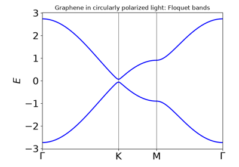
Floquet Engineering: A Chern Insulator From Circularly Polarized Light
2010-2013 – Anomalous Floquet Topological Phases#
Kitagawa, Berg, Rudner and Demler noticed that a driven lattice can have chiral edge states although every Floquet band has zero Chern number: quasienergies are defined modulo \(\omega = 2\pi/T\), so edge states can wind around the whole Floquet zone, and the bulk-edge correspondence of static insulators fails. Rudner, Lindner, Berg and Levin gave the minimal model – a bipartite square lattice whose hopping is switched on along one bond direction at a time, so that at “perfect transfer” the evolution over a period is the identity in the bulk while particles run along the edges – and the invariant that counts the edge states in a gap \(\epsilon\): the winding number \(W[U_\epsilon]\) of the evolution at all times of the period, closed by a return map built from \(H_F\) with its branch cut in that gap. Across a group of bands it changes by their total Chern number. The anomalous phases were observed in photonic waveguide lattices in 2017.
Implementation: tbkit.floquet.step_drive() (exact
piecewise-constant drives of KSpace models, ribbons, or real-space
System flakes), DrivenKSpace (any
\(H(\mathbf{k}, t)\)), the epsilon branch cut of
effective_hamiltonian() and
FloquetKSpace,
winding_number(), and
edge_state_count() for ribbons.
References: T. Kitagawa, E. Berg, M. Rudner, and E. Demler, “Topological characterization of periodically driven quantum systems,” Phys. Rev. B 82, 235114 (2010); M. S. Rudner, N. H. Lindner, E. Berg, and M. Levin, “Anomalous Edge States and the Bulk-Edge Correspondence for Periodically Driven Two-Dimensional Systems,” Phys. Rev. X 3, 031005 (2013); L. J. Maczewsky, J. M. Zeuner, S. Nolte, and A. Szameit, Nat. Commun. 8, 13756 (2017); S. Mukherjee et al., Nat. Commun. 8, 13918 (2017).
Example: examples/floquet/plot_anomalous_floquet_phases.py builds
the five-step model: at perfect transfer both Floquet bands sit at
quasienergy 0 with \(C = 0\), yet \(W = 1\) in the gap at
\(\pi/T\) and a ribbon has one chiral mode per edge; on a real-space
flake a particle in the bulk returns to its site every period while one
on the edge moves along it. Away from perfect transfer it maps the
trivial, Chern and anomalous phases, where the Chern numbers of
\(H_F\) miss the edge states.
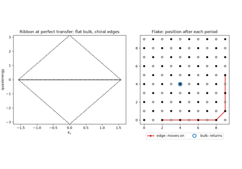
Anomalous Floquet Topological Phases: Edge States With Zero Chern Numbers
2015-2018 – Exceptional Points in Momentum Space: Vorticity, Exceptional Rings and Bulk Fermi Arcs#
The exceptional point of a gain-loss dimer (1998/2015, above) needs a parameter to be tuned. In a 2D crystal the Bloch momentum supplies two parameters for free, and exceptional points become generic features of non-Hermitian band structures. Zhen et al. (2015) saw it first in a photonic crystal slab: radiation losses turned a Dirac cone into a ring of exceptional points, inside which the real parts of the two bands coincide. Kozii and Fu (2017) and Zhou et al. (2018) showed that a generic non-Hermitian term instead splits a Dirac point into a pair of exceptional points joined by a bulk Fermi arc, an open line of equal real energies and different lifetimes, observed in a photonic crystal. Shen, Zhen and Fu (2018) put these objects on a topological footing: the eigenvalue vorticity \(\nu = -\frac{1}{2\pi}\oint\nabla_{\mathbf{k}}\arg(E_m - E_n)\cdot d\mathbf{k}\) is \(\pm1/2\) around an exceptional point (the two bands swap after one loop) and 0 around a Dirac point, so a Dirac point can only split into EPs of opposite vorticity; they also defined Chern numbers of non-Hermitian bands from left and right eigenvectors, all equal as long as a line gap separates the bands. The discriminant \(\Delta = \prod_{m<n}(E_m - E_n)^2\) (Yang, Schnyder, Hu and Chiu, 2021) gives the same charges without following any band, and its periodicity forces the charges to add up to zero over the Brillouin zone: exceptional points come in pairs. Encircling an exceptional point swaps the two eigenstates, and restores the state only after four loops, as Heiss predicted and Dembowski et al. measured in a microwave cavity.
Implementation: the new module tbkit.exceptional:
track_eigenvalues() (continuation around a
loop, never sorting), vorticity(),
discriminant() (from the resultant of the
characteristic polynomial) and
discriminant_winding(),
find_exceptional_points() (charges, orders from
the Petermann factor, exceptional rings, and the doubling theorem),
fermi_arcs(), and
encircle();
tbkit.kspace.KSpace.biorthogonal_chern_number() and
biorthogonal_berry_curvature() (the LR, RL, RR
and LL Chern numbers of line-gapped bands).
References: B. Zhen, C. W. Hsu, Y. Igarashi, L. Lu, I. Kaminer, A. Pick, S.-L. Chua, J. D. Joannopoulos, and M. Soljacic, “Spawning rings of exceptional points out of Dirac cones,” Nature 525, 354-358 (2015); V. Kozii and L. Fu, “Non-Hermitian topological theory of finite-lifetime quasiparticles: prediction of bulk Fermi arc due to exceptional point,” arXiv:1708.05841 (2017); H. Shen, B. Zhen, and L. Fu, “Topological band theory for non-Hermitian Hamiltonians,” Phys. Rev. Lett. 120, 146402 (2018); H. Zhou, C. Peng, Y. Yoon, C. W. Hsu, K. A. Nelson, L. Fu, J. D. Joannopoulos, M. Soljacic, and B. Zhen, “Observation of bulk Fermi arc and polarization half charge from paired exceptional points,” Science 359, 1009-1012 (2018); Z. Yang, A. P. Schnyder, J. Hu, and C.-K. Chiu, “Fermion doubling theorems in two-dimensional non-Hermitian systems for Fermi points and exceptional points,” Phys. Rev. Lett. 126, 086401 (2021); W. D. Heiss, “Repulsion of resonance states and exceptional points,” Phys. Rev. E 61, 929 (2000); C. Dembowski, H.-D. Graf, H. L. Harney, A. Heine, W. D. Heiss, H. Rehfeld, and A. Richter, “Experimental observation of the topological structure of exceptional points,” Phys. Rev. Lett. 86, 787 (2001).
Examples:
examples/non_hermitian/plot_exceptional_points_fermi_arcs.py finds
the four EPs of graphene with a non-Hermitian \(i\gamma\sigma_x\)
coupling, of charges \(\pm1\) adding up to zero, all second order,
exactly where \(\mathrm{Re}f = 0\) and \(|\mathrm{Im}f| = \gamma\),
and the Fermi arc between each pair, on which the two eigenvalues are
purely imaginary; it maps \(\mathrm{Re}\,E\) and
\(\mathrm{Im}\,E\) around K.
examples/non_hermitian/plot_exceptional_point_vorticity.py splits a
Dirac point into EP pairs of vorticity \(\pm1/2\) whose total stays
the Dirac point’s 0, a distance \(4\gamma/3\) apart for small
\(\gamma\), and turns it into an exceptional ring \(|f| = \gamma\)
of radius close to \(2\gamma/3\) under balanced gain and loss.
examples/non_hermitian/plot_exceptional_point_encircling.py confirms
that one loop around the Dirac point returns each state with a Berry
phase \(\pi\), while around an EP one loop swaps the two states, two
loops return the state with a factor \(-1\), and four with
\(+1\). examples/non_hermitian/plot_exceptional_points_chern_number.py
confirms that the four biorthogonal Chern numbers of the Haldane model
with gain and loss \(\pm i\gamma\) all equal 1 until the real line gap
\(2\sqrt{1-\gamma^2}\) closes at \(\gamma = 1\), where three pairs
of EPs appear around the M points and the Chern number is no longer
defined.
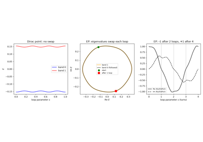
Exceptional Points in Momentum Space: Encircling an EP versus a Dirac Point
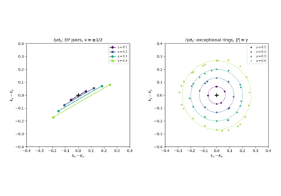
Exceptional Points in Momentum Space: Vorticity and Exceptional Rings
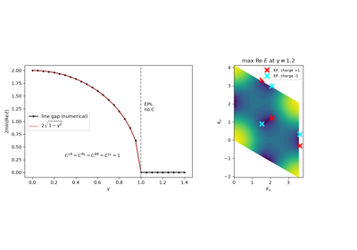
Exceptional Points in Momentum Space: the Chern Number until the Line Gap Closes
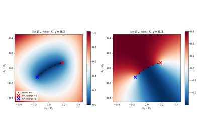
Exceptional Points in Momentum Space: Complex Bands and the Bulk Fermi Arc
2018/2019 – The Generalized Brillouin Zone and Non-Bloch Band Theory#
With the skin effect (1996/2018, above), the open-chain eigenstates decay as \(|\beta|^n\) with \(|\beta| \neq 1\), so the Bloch Hamiltonian on the unit circle \(\beta = e^{ik}\) no longer describes the open chain, and its topological invariants no longer count the edge states. Yao and Wang restored the bulk-boundary correspondence by continuing the Bloch Hamiltonian off the unit circle, \(H(\beta) = \sum_n t(n)\beta^n\), onto a generalized Brillouin zone on which it reproduces the open-chain spectrum. For their non-Hermitian SSH chain the GBZ is a circle of radius \(\sqrt{|(t_1-\gamma/2)/(t_1+\gamma/2)|}\); the winding number along it, not along the unit circle, counts the zero modes, and the transition moves from the Bloch gap closing \(t_1 = t_2 \pm \gamma/2\) to \(t_1^2 = t_2^2 + \gamma^2/4\). Yokomizo and Murakami gave the general construction for any 1D model: sort the roots of \(\det[H(\beta) - E] = 0\) by modulus; \(E\) is in the open-chain spectrum when the middle two have the same modulus. The non-Bloch bulk-boundary correspondence was observed in quantum walks of photons and in electric circuits in 2020.
Implementation: tbkit.kspace.KSpace.get_ham_beta() (the
non-Bloch Hamiltonian), gbz() (the GBZ by the
Yokomizo-Murakami construction) and
finite_ham() (the open chain it describes).
References: S. Yao and Z. Wang, “Edge States and Topological Invariants of Non-Hermitian Systems,” Phys. Rev. Lett. 121, 086803 (2018); K. Yokomizo and S. Murakami, “Non-Bloch Band Theory of Non-Hermitian Systems,” Phys. Rev. Lett. 123, 066404 (2019); L. Xiao, T. Deng, K. Wang, G. Zhu, Z. Wang, W. Yi, and P. Xue, “Non-Hermitian bulk-boundary correspondence in quantum dynamics,” Nature Physics 16, 761-766 (2020); T. Helbig, T. Hofmann, S. Imhof, M. Abdelghany, T. Kiessling, L. W. Molenkamp, C. H. Lee, A. Szameit, M. Greiter, and R. Thomale, “Generalized bulk-boundary correspondence in non-Hermitian topolectrical circuits,” Nature Physics 16, 747-750 (2020).
Example: examples/non_hermitian/plot_generalized_brillouin_zone.py
finds the GBZ of the Hatano-Nelson chain, the circle
\(|\beta| = \sqrt{t_L/t_R}\), and of the non-Hermitian SSH chain, the
circle of radius \(\sqrt{|(t_1-\gamma/2)/(t_1+\gamma/2)|}\), on which
\(H(\beta)\) reproduces the real open-chain spectrum while the ring
spectrum is complex. Scanning \(t_1\), it confirms that the zero
modes and the non-Bloch winding number 1 both end at
\(t_1 = \sqrt{t_2^2 + \gamma^2/4}\), while the Bloch winding number
stays at \(1/2\) until \(t_1 = t_2 + \gamma/2\).
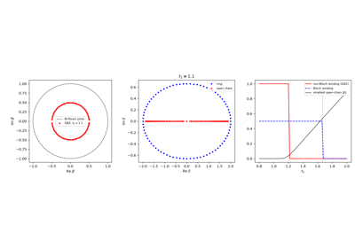
The Generalized Brillouin Zone and Non-Bloch Band Theory